overviewpy¶


overviewpy aims to make it easy to get an overview of a data set by displaying relevant sample information.
Installation¶
$ pip install overviewpy
Usage¶
Implemented Functions¶
The goal of overviewpy is to make it easy to get an overview of a data set by displaying relevant sample information. At the moment, there are the following functions:
overview_tabgenerates a tabular overview of the sample (and returns a data frame). The general sample plots a two-column table that provides information on an id in the left column and a the time frame on the right column.overview_markdownconverts the output ofoverview_tabinto a Markdown table that can be copy-pasted into any Markdown document or saved as a.mdfile.overview_naplots an overview of missing values by variable (both by row and by column)overview_summaryreturns a per-column summary of any data frame (non-null count, unique count, sample values)overview_plotvisualizes observation presence across id and time as a connected dot-plotoverview_overlapplots comparison plots (bar chart or Venn diagram) to compare the ID coverage of two data framesoverview_heatplots a heat map of observation counts (or percentages) for each id-time combinationoverview_crossplotplots a scatter of two conditions split by their thresholds, dividing observations into four quadrantsoverview_crosstabsorts observations into a 2×2 cross table based on two conditions and their thresholdsoverview_latexconverts the output ofoverview_taboroverview_crosstabinto a LaTeX table, which can be printed or saved directly as a.texfile.
overview_tab¶
Generate some general overview of the data set using the time and scope
conditions with overview_tab. The resulting data frame collapses the time condition for each id by
taking into account potential gaps in the time frame.
Rows with missing values in either the id or time column are automatically
dropped and a UserWarning is raised for each affected variable.
from overviewpy.overview import Overview
import pandas as pd
data = {
'id': ['RWA', 'RWA', 'RWA', 'GAB', 'GAB', 'FRA', \
'FRA', 'BEL', 'BEL', 'ARG'],
'year': [2022, 2023, 2021, 2023, 2020, 2019, 2015, \
2014, 2013, 2002]
}
df = pd.DataFrame(data)
overview = Overview(df=df, id_col='id', time='year')
df_overview = overview.overview_tab()
The output is a data frame with one row per id and a time_frame column that compresses consecutive years into ranges (e.g. 2021-2023) and non-consecutive years as a comma-separated list (e.g. 2015, 2019):
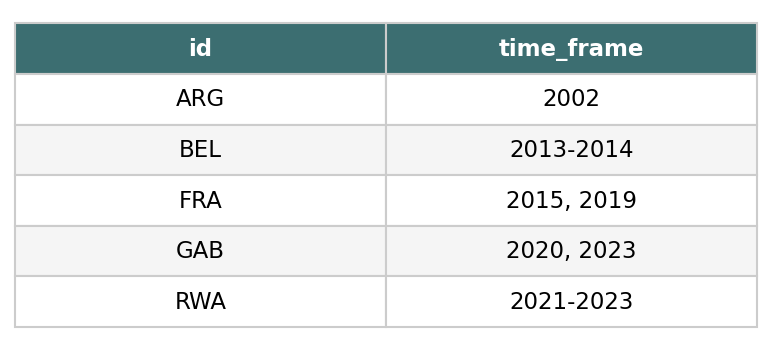
If your data contains missing values in id or year, they are silently
removed and you will see a warning — no extra preprocessing needed:
import numpy as np
data_with_na = {
'id': ['RWA', 'RWA', np.nan, 'GAB'],
'year': [2022, np.nan, 2021, 2020],
}
df_na = pd.DataFrame(data_with_na)
# UserWarning: missing id and time values are dropped automatically
overview = Overview(df=df_na, id_col='id', time='year')
df_overview = overview.overview_tab()
overview_markdown¶
overview_markdown converts the output of overview_tab into a Markdown table. The result can be printed, copy-pasted into any Markdown document, or saved directly as a .md file.
from overviewpy.overview import Overview
import pandas as pd
data = {
'id': ['RWA', 'RWA', 'RWA', 'GAB', 'GAB', 'FRA', \
'FRA', 'BEL', 'BEL', 'ARG'],
'year': [2022, 2023, 2021, 2023, 2020, 2019, 2015, \
2014, 2013, 2002]
}
df = pd.DataFrame(data)
overview = Overview(df=df, id_col='id', time='year')
print(overview.overview_markdown())
This produces:
## Time and scope of the sample
| Sample | Time frame |
|---|---|
| ARG | 2002 |
| BEL | 2013-2014 |
| FRA | 2015, 2019 |
| GAB | 2020, 2023 |
| RWA | 2021-2023 |
You can customise the title and column headers, and optionally save to a file:
overview.overview_markdown(
title="My sample",
id_label="Country",
time_label="Years covered",
file_path="output/sample_overview.md",
)
overview_na¶
overview_na visualises missing values in your data. It returns a
horizontal bar plot showing the amount of missing data (NAs) for each variable,
sorted from most to least missing. By default it shows percentages (perc=True);
pass perc=False to display absolute counts instead. Switch to row_wise=True
for a per-observation view, or set add=True to append the NA statistics
directly to your data frame.
from overviewpy.overview import Overview
import pandas as pd
import numpy as np
data_na = {
'id': ['RWA', 'RWA', 'RWA', np.nan, 'GAB', 'GAB',\
'FRA', 'FRA', 'BEL', 'BEL', 'ARG', np.nan, np.nan],
'year': [2022, 2001, 2000, 2023, 2021, 2023, 2020, \
2019, np.nan, 2015, 2014, 2013, 2002]
}
df_na = pd.DataFrame(data_na)
ov_na = Overview(df=df_na, id_col='id', time='year')
# Default: column-wise, percentage
ov_na.overview_na()
# Absolute counts instead of percentage
ov_na.overview_na(perc=False)
# Custom y-axis label
ov_na.overview_na(yaxis="My Variables")
# Row-wise: one bar per observation
ov_na.overview_na(row_wise=True)
# Row-wise and augment the data frame with na_count and percentage columns
df_with_na = ov_na.overview_na(row_wise=True, add=True)
Column-wise output (default):
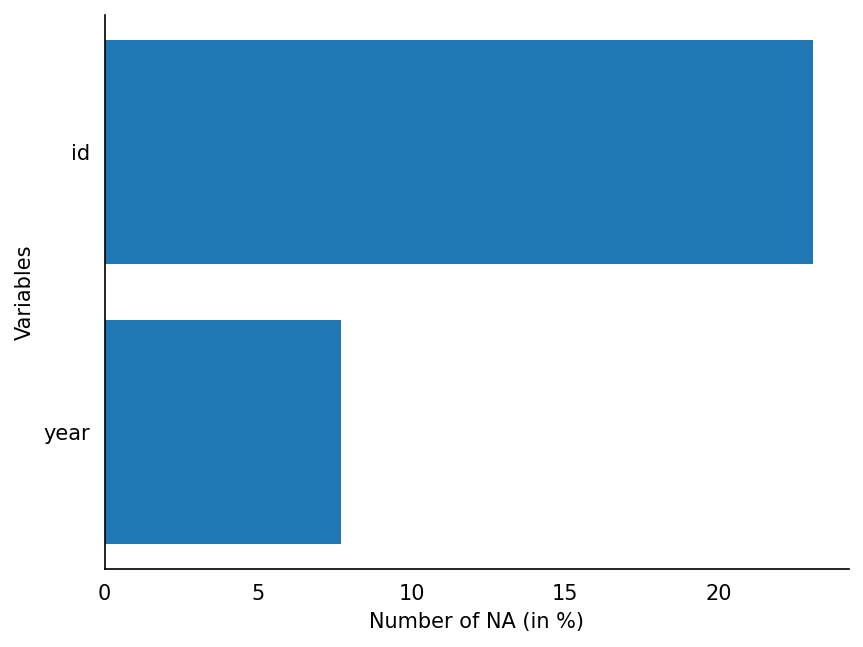
Row-wise output:
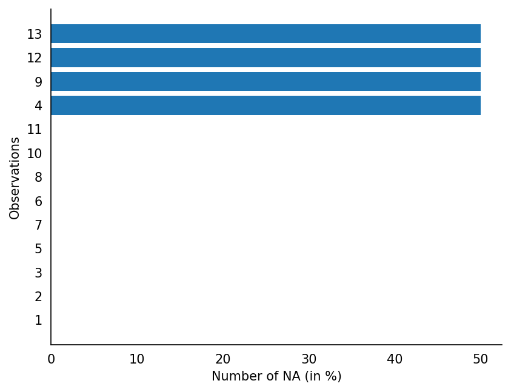
overview_summary¶
Use overview_summary to get a quick structured overview of any data frame:
from overviewpy.overview import Overview
import pandas as pd
df = pd.read_csv("mydata.csv")
overview = Overview(df=df, id_col=None, time=None)
overview.overview_summary()
This returns a data frame with one row per column containing non_null_count, unique_count, and sample_values:
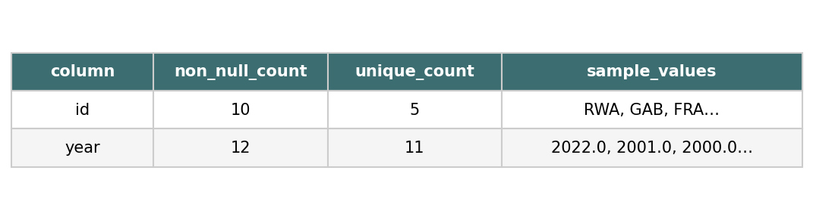
overview_plot¶
overview_plot visualizes the presence of observations across the id and time
dimensions. Each id appears as a row; time is on the x-axis. Consecutive time
periods are connected by a line; gaps in coverage produce separate disconnected
clusters. Optionally color-code points by a third variable.
from overviewpy.overview import Overview
import pandas as pd
data = {
'id': ['RWA', 'RWA', 'RWA', 'GAB', 'GAB', 'FRA', 'FRA', 'BEL', 'BEL', 'ARG'],
'year': [2022, 2023, 2021, 2023, 2020, 2019, 2015, 2014, 2013, 2002]
}
df = pd.DataFrame(data)
overview = Overview(df=df, id_col='id', time='year')
overview.overview_plot()
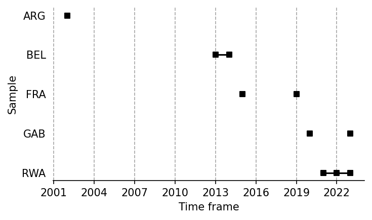
You can color-code the points by a third variable using the color parameter:
# color-code points by a third variable
overview.overview_plot(color='regime')
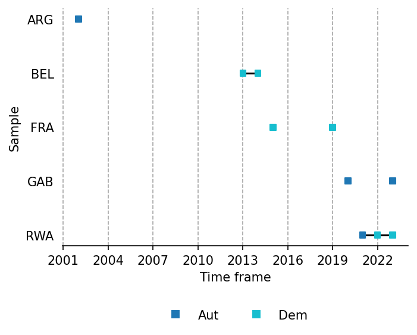
overview_overlap¶
overview_overlap compares two data frames by visualizing how much their ID columns overlap. Use plot_type="bar" (default) for a grouped bar chart showing observation counts per identifier, or plot_type="venn" for a two-set Venn diagram.
from overviewpy.overview import Overview
import pandas as pd
data2 = {'id': ['RWA', 'GAB', 'GAB', 'ARG', 'ARG']}
df2 = pd.DataFrame(data2)
# Grouped bar chart (default)
overview = Overview(df=df, id_col='id', time='year')
overview.overview_overlap(dat2=df2, dat2_id='id', dat1_name='Survey 1', dat2_name='Survey 2')
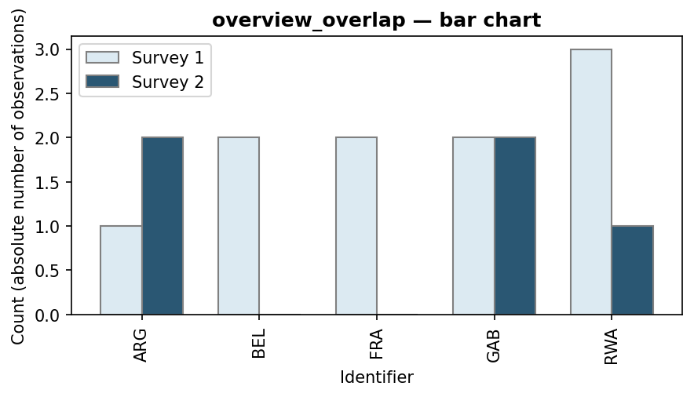
# Venn diagram
overview.overview_overlap(dat2=df2, dat2_id='id', dat1_name='Survey 1', dat2_name='Survey 2', plot_type='venn')
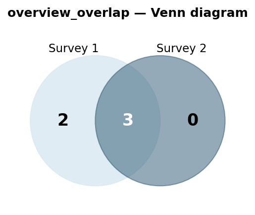
overview_heat¶
overview_heat plots a heat map that shows how many observations exist for each id-time combination. Set perc=True together with exp_total to display coverage as a percentage of the expected maximum.
from overviewpy.overview import Overview
import pandas as pd
overview = Overview(df=df, id_col='id', time='year')
overview.overview_heat()
# Percentage view
overview.overview_heat(perc=True, exp_total=3)
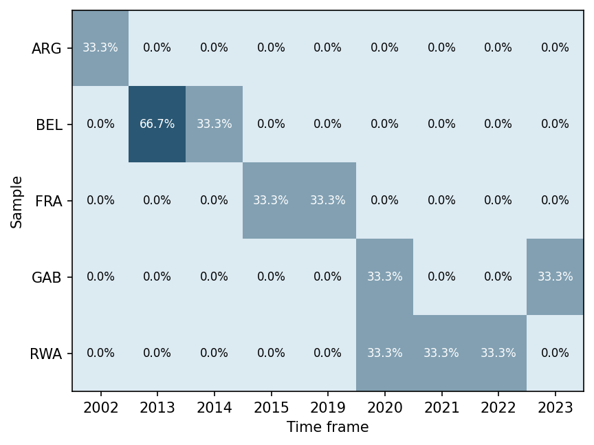
overview_crossplot¶
overview_crossplot visualises two conditions against user-defined thresholds. Each observation is placed at its mean cond1/cond2 values after aggregating to unique (id, time) pairs. Vertical and horizontal threshold lines divide the plot into four quadrants.
from overviewpy.overview import Overview
import pandas as pd
data = {
'id': ['RWA', 'RWA', 'GAB', 'GAB', 'FRA'],
'year': [2020, 2021, 2020, 2021, 2020],
'gdp': [10000, 30000, 20000, 50000, 26000],
'population': [12000000, 13000000, 2000000, 2100000, 68000000],
}
df = pd.DataFrame(data)
overview = Overview(df=df, id_col='id', time='year')
# Basic plot
overview.overview_crossplot(cond1='gdp', cond2='population',
threshold1=25000, threshold2=27000000)
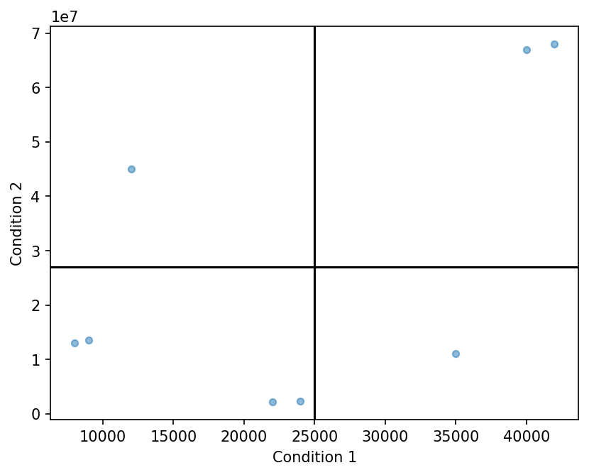
# With quadrant coloring and point labels
overview.overview_crossplot(cond1='gdp', cond2='population',
threshold1=25000, threshold2=27000000,
color=True, label=True,
xaxis="GDP per capita", yaxis="Population")
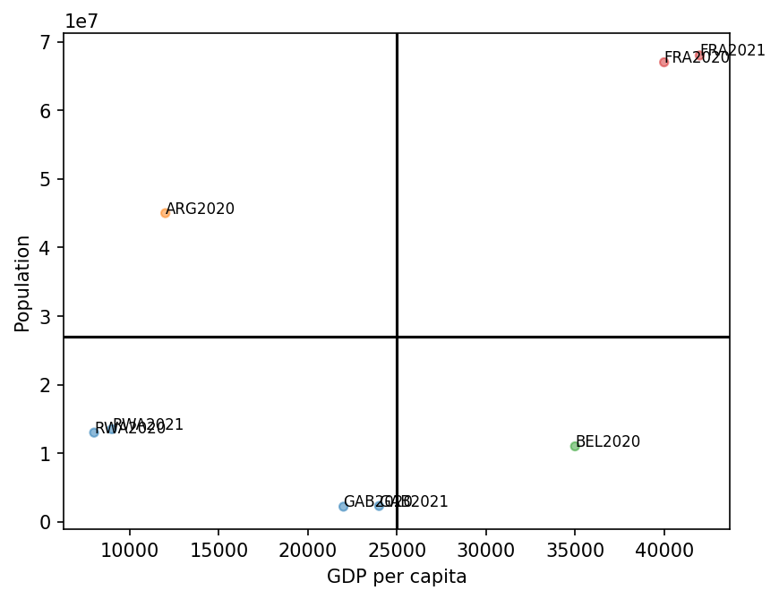
overview_latex¶
Use overview_latex to export the result of overview_tab as a LaTeX table:
from overviewpy.overview import Overview
import pandas as pd
data = {
'id': ['RWA', 'RWA', 'RWA', 'GAB', 'GAB', 'FRA',
'FRA', 'BEL', 'BEL', 'ARG'],
'year': [2022, 2023, 2021, 2023, 2020, 2019, 2015,
2014, 2013, 2002]
}
df = pd.DataFrame(data)
ovw = Overview(df=df, id_col='id', time='year')
df_overview = ovw.overview_tab()
# Print LaTeX to the console
ovw.overview_latex(df_overview, title="Time and scope", id_label="Country", time_label="Years")
# Save directly to a .tex file
ovw.overview_latex(df_overview, save_out=True, file_path="output.tex")
overview_crosstab¶
overview_crosstab sorts a dataset into a 2×2 cross table based on two numeric conditions and their thresholds. Each cell lists the id–time entries that fall into that quadrant.
from overviewpy.overview import Overview
import pandas as pd
data = {
'id': ['RWA', 'RWA', 'GAB', 'GAB', 'FRA', 'FRA', 'BEL', 'BEL', 'ARG'],
'year': [2020, 2021, 2020, 2021, 2020, 2021, 2020, 2021, 2020],
'gdp': [30000, 32000, 20000, 21000, 35000, 36000, 15000, 15500, 28000],
'pop': [13000000, 13500000, 2300000, 2400000, 67000000, 68000000,
11500000, 11600000, 45000000],
}
df = pd.DataFrame(data)
ovw = Overview(df=df, id_col='id', time='year')
ovw.overview_crosstab(
cond1='gdp',
cond2='pop',
threshold1=25000,
threshold2=10000000,
)
The result is a 2×2 DataFrame whose rows and columns are labelled by the threshold conditions:
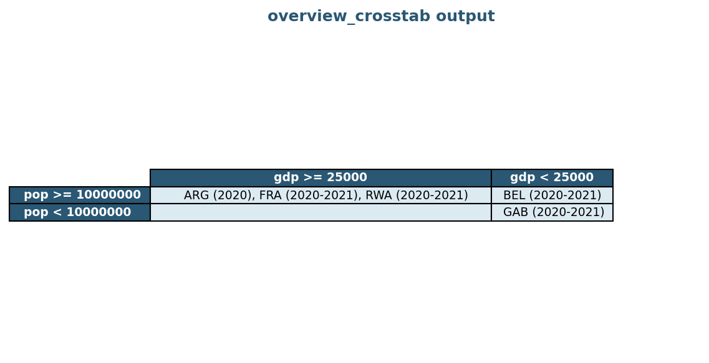
If duplicate (id, time) pairs exist, the conditions are averaged before thresholding. Missing values in id are dropped automatically.
Command line¶
Alternatively, run the summarizer from the command line to generate an HTML report:
Invocation¶
usage: $ python -m overviewpy [-h] [-d DELIMITER] [-t {csv}] [-o {file,stdout}] datafile
positional arguments:
datafile The data file to read. Expects a path to a readable data file.
options:
-h, --help show this help message and exit
-d DELIMITER, --delimiter DELIMITER
Define the character(s) which delimit the file. Defaults to ','.
-t {csv,excel,fwf}, --filetype {csv,excel,fwf}
File type to parse the datafile with. Inferred from the file extension if omitted.
-o {file,stdout}, --output-type {file,stdout}
Type of output desired. Defaults to creating an HTML file.
Output¶
The default output is created as an HTML file in the same directory as the datafile passed in. The output file will be
named with the stem of the datafile name and -summary.html. For example, if your datafile is named magicdata.csv,
the output file would be magicdata-summary.html
The output file will list, at the top, some summary information about the number of rows and columns in the file.
Below that frontmatter is a table listing, for each included column in the file:
- The column name
- The number of non-null/empty values for that column
- The number of unique non-null values for that column
- A set of 5 example values found in that column.
Contributing¶
Interested in contributing? Check out the contributing guidelines. Please note that this project is released with a Code of Conduct. By contributing to this project, you agree to abide by its terms.
License¶
overviewpy is licensed under the terms of the BSD 3-Clause license.
Credits¶
overviewpy was created with cookiecutter and the py-pkgs-cookiecutter template.